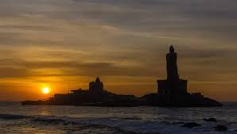

Kanyakumari's unique geographical location at the confluence of the Arabian Sea, the Bay of Bengal, and the Indian Ocean makes the sunrise especially dramatic. The sun appears to emerge directly from the water, painting the sky with vibrant colors.